Keyboard61 CAD process captures 14 real captures from print-quote checks and Fusion inspection. These show the current inspection process; they do not reconstruct earlier modeling history. The design remains a prototype pending physical fit checks.
1. Initial print upload 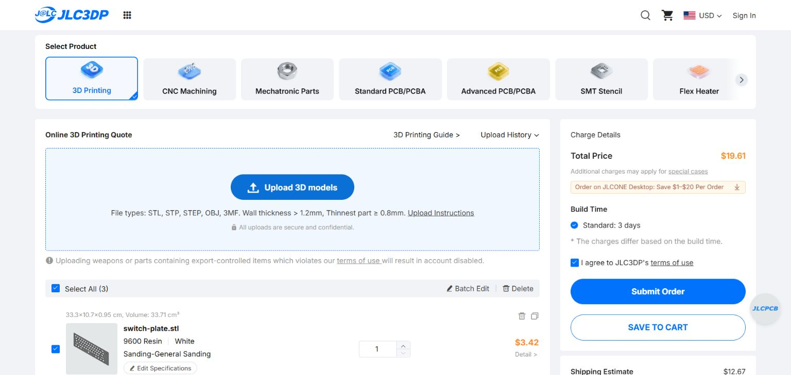
Uploaded the base, plate and individual spacer to inspect the vendor quote. The tiny individual spacer was later replaced by a connected pack. 2. Check printing limits 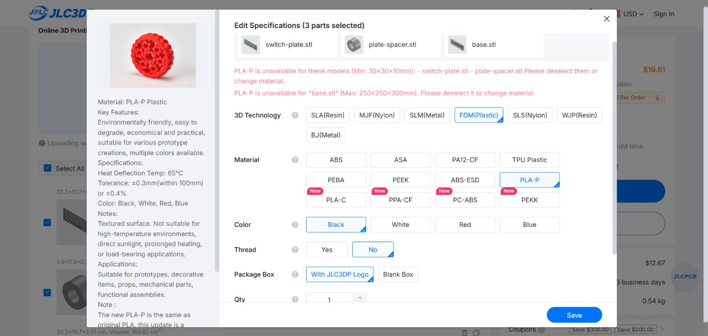
The selected PLA service rejected the full-width parts and tiny spacer. This led to checking resin and combining the spacers. 3. Assembly imported into Fusion 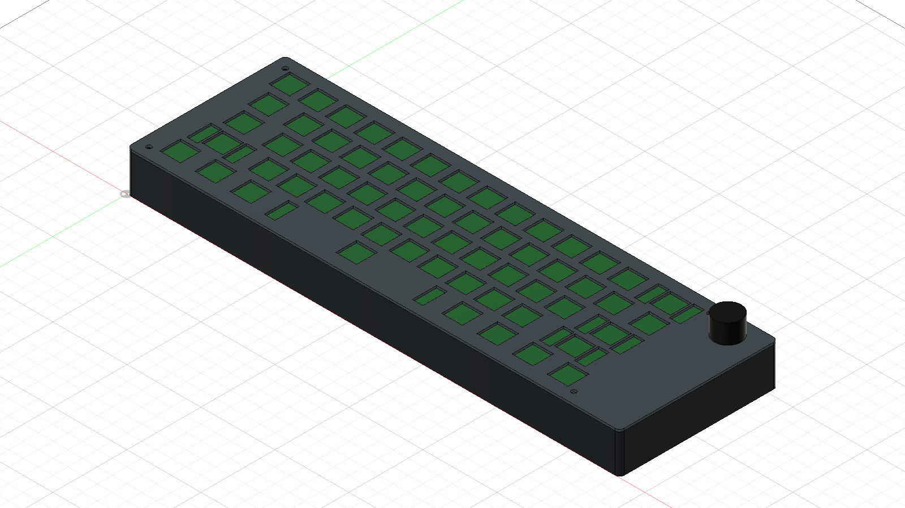
Opened the STEP assembly in Fusion to inspect the case, switch plate and reference envelopes together. 4. Top alignment inspection 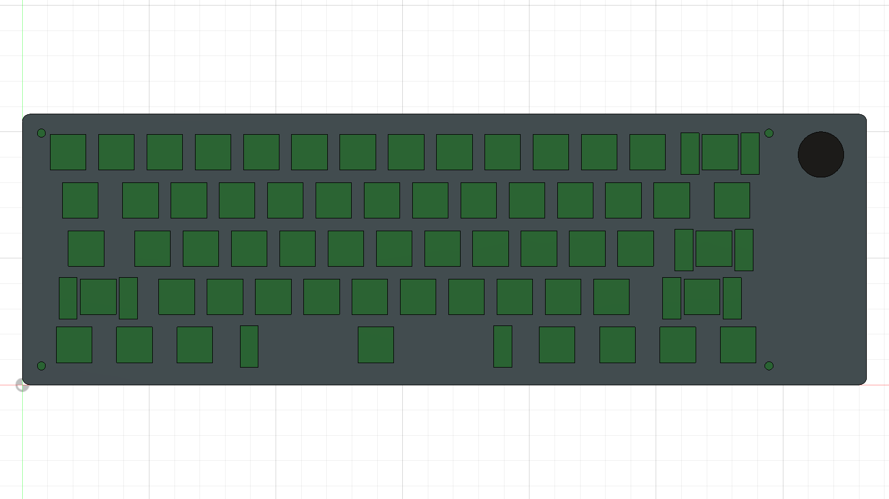
Checked the key openings, stabilizer slots and upper-right knob position from above. 5. Underside inspection 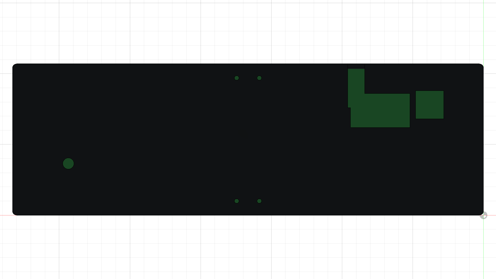
Viewed the bottom openings and cable path. Actual plug insertion and bend clearance still need a physical fit check. 6. Isolate the base Hid the other components to inspect the four PCB mounting bosses and case walls. 7. Inspect USB access 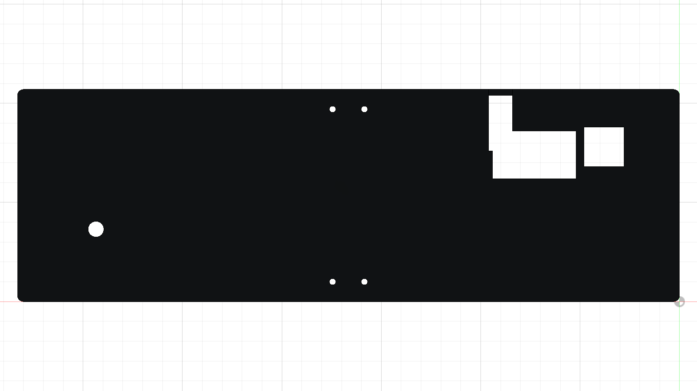
Viewed the floor opening and channel intended for the inward-facing Pico USB connection. 8. Inspect the switch plate 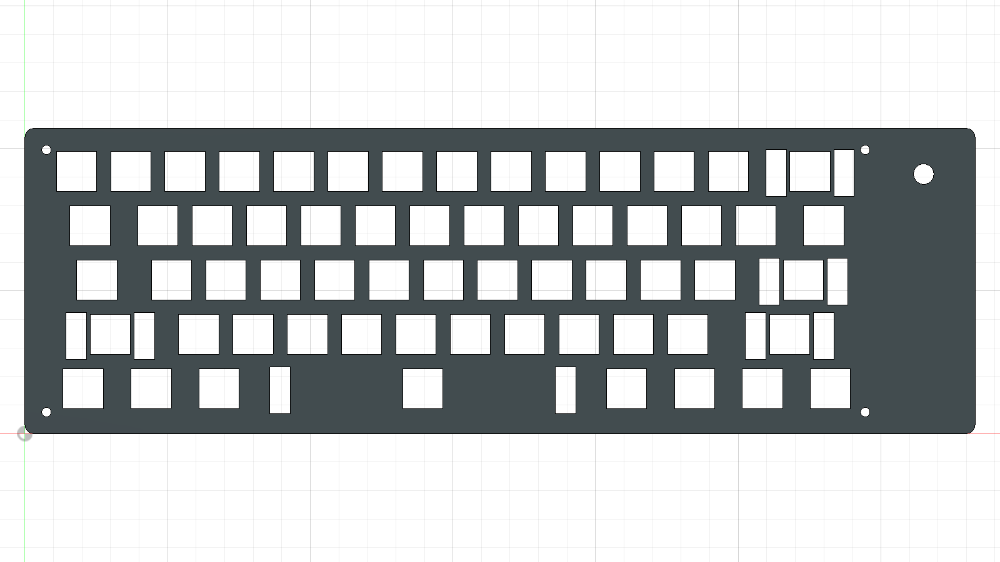
Isolated the plate to check all 61 switch openings, stabilizer clearances and encoder mounting hole. 9. Inspect encoder support 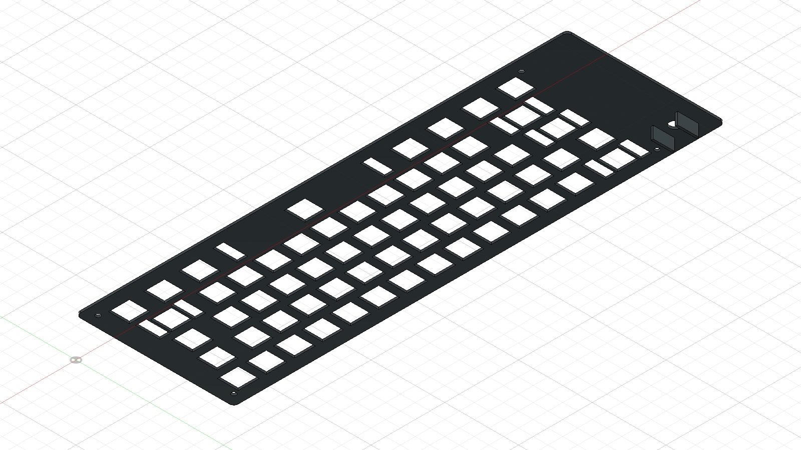
Viewed the plate underside and support walls around the case-mounted encoder. Delivered hardware dimensions need a trial fit. 10. Check PCB height reference 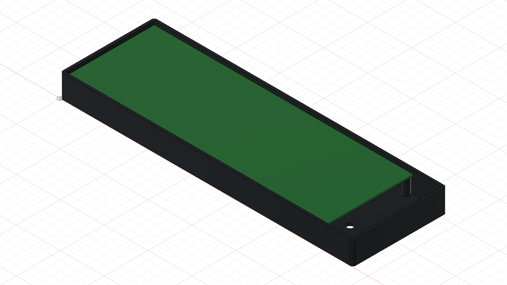
Displayed the PCB envelope inside the base to inspect the planned mounting height. This is an envelope, not a detailed controller or switch model. 11. Inspect knob and encoder envelopes 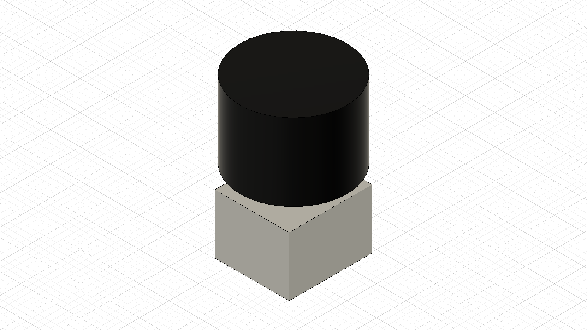
Isolated the simple reference bodies used to reserve room for the knob and encoder. They are not manufacturer models. 12. Restore the assembly 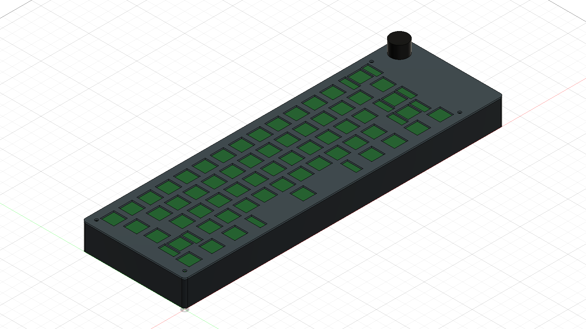
Restored the components and inspected the enclosure from the opposite isometric view. 13. Revised printing quote 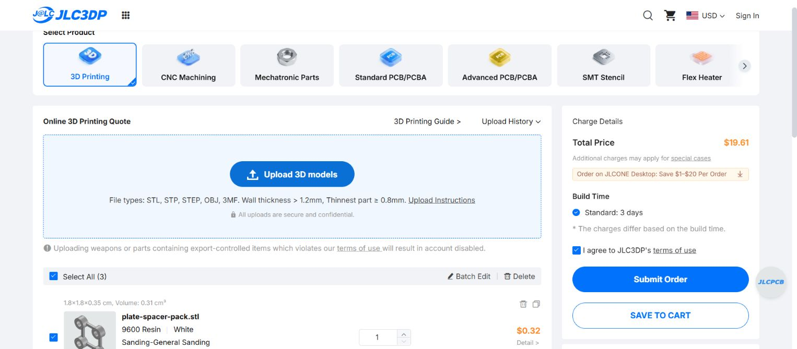
Uploaded the revised four-spacer pack with the full base and plate. The resin quote totals $19.61 before shipping and tax. 14. Complete quote and shipping 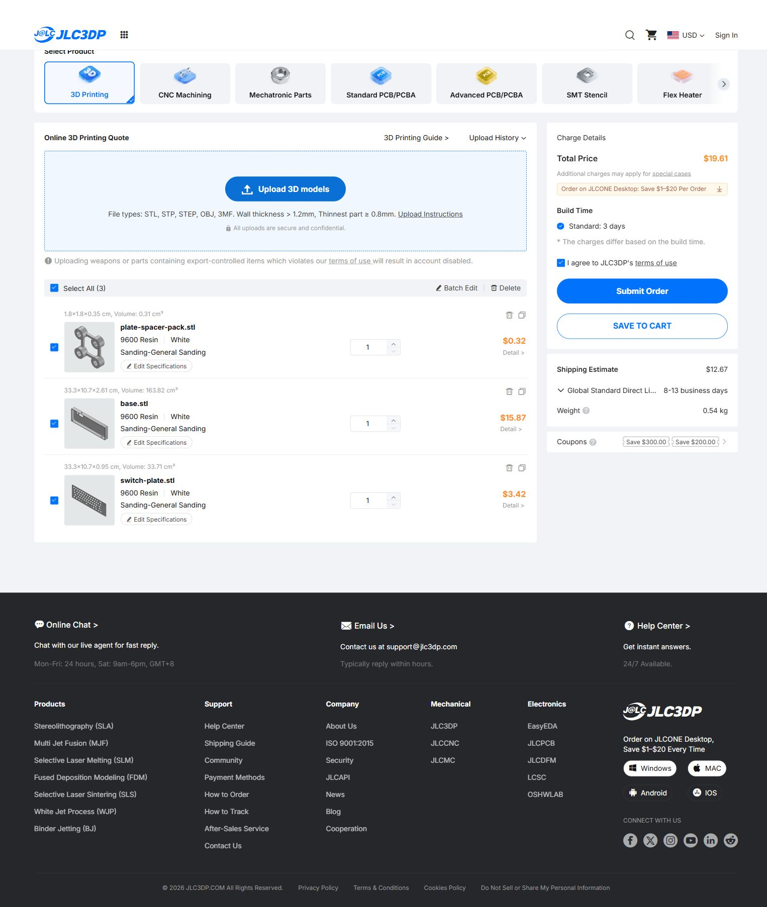
Captured all three items: base $15.87, plate $3.42, spacer pack $0.32, plus $12.67 estimated shipping. No order was placed.